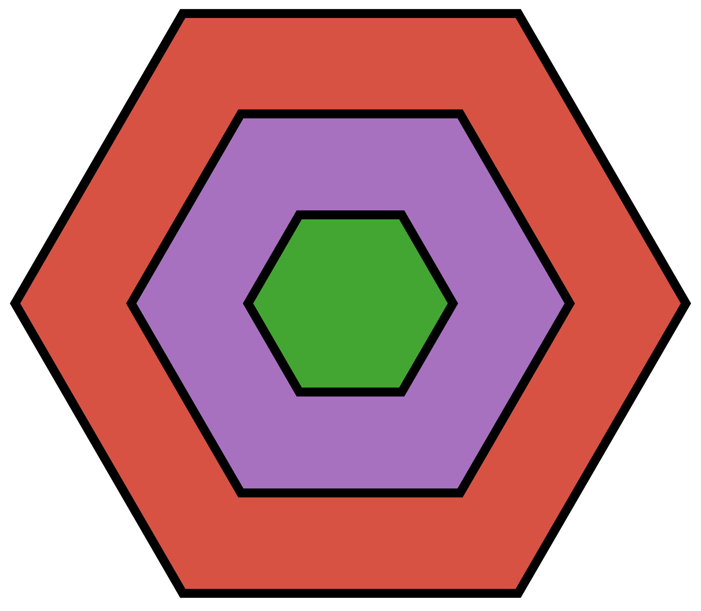

🚀
Fast
Use the package ParallelStencil.jl to allow high performance on both CPU and GPU in 2D and 3D.
Made for performance for 1D, 2D, and 3D problems

DiffusionGarnet.jl is a high-level Julia package to model linear or coupled chemical diffusion in trace and major elements using natural garnet data. It is suitable for forward modelling but also inverse modelling to retrieve timescales for geospeedometry. It currently supports 1D, spherical for both evenly and non-evenly spaced data, and 2D and 3D coordinates for evenly spaced data.
DiffusionGarnet.jl is a registered package and may be installed directly with the following command in the Julia REPL
julia>]
pkg> add DiffusionGarnet
pkg> test DiffusionGarnet